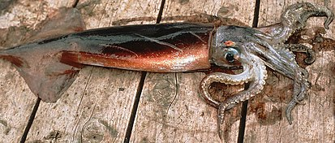

Рассмотрим некоторых представителей этой категории.
Кальмар-мартиалия.
Вид головоногих моллюсков из подсемейства Todarodinae семейства Ommastrephidae. Длина до 40 см. Встречаются на глубине от 0 до 50 м. Обитает в эпипелагических и мезопелагических водах Южного океана. Его ареал может быть приполярным с субантарктическим распространением. Эти крупные кальмары охотятся на глубоководных меламфаевых и других мезопелагических рыб, а на них, в свою очередь, охотятся королевские пингвины и альбатросы. Вид представляет потенциальный интерес как объект промысла.
